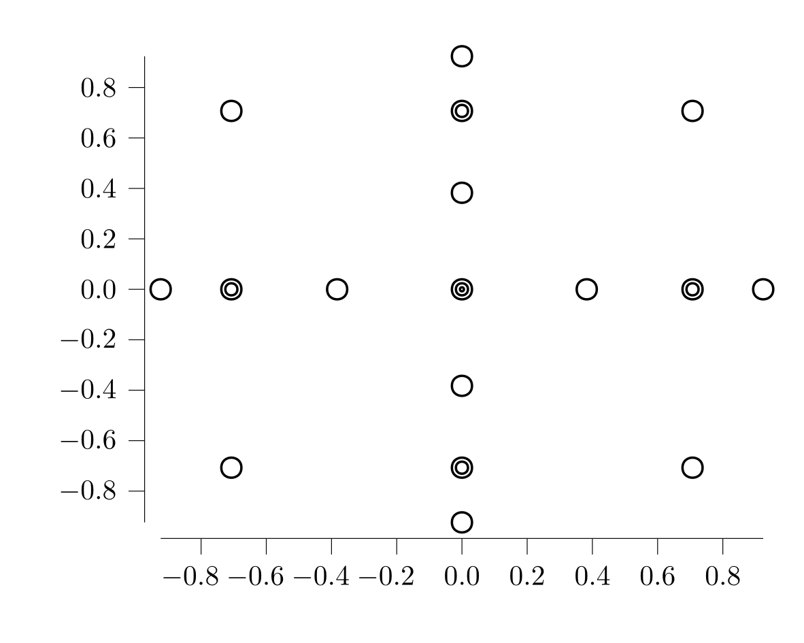

Smolyak bases
Now we consider multivariate approximations. For a few dimensions, it makes sense to form a tensor product of univariate basis functions: that is, for each dimension, we consider all basis functions, and just multiply them together to form a multivariate function. Unfortunately, this runs into the curse of dimensionality: in $N$ dimensions, of each basis has $d$ functions, we end up with $N^d$ of them.
A solution to this problem is sparse grids. This package implements a sparse variant known as Smolyak bases or grids. We only allow combinations that have a total level below some threshold, also limiting each dimension's level. The way to specify this is with
julia> using SpectralKitjulia> SmolyakLevel(total = 3, each = 2)SmolyakLevel(total = 3, each = 2) #= 0 ≤ ∑ℓᵢ ≤ 3, all 0 ≤ ℓᵢ ≤ 2 =#
In two dimensions, this would allow level combinations $(0,0), (1,0), (0,1), (2,0), (1,1), (0,2), (2,1), (1,2)$. In this scheme, grids also nest:
using Miter
using Miter.Lengths
let t = BoundedLinear(-1, 1)
Plot([Scatter(MarkSymbol(:o; size = 1mm * (total + 0.5)),
grid(SmolyakBasis(Chebyshev(), Interior(),
(t, t), SmolyakLevel(; total, each = total))))
for total in 0:2])
end
Inputs each > total are accepted, but normalized with a warning:
julia> SmolyakLevel(; total = 1, each = 5)┌ Warning: ‘each’ normalized to ‘total’ │ each = 5 │ total = 1 └ @ SpectralKit ~/work/SpectralKit.jl/SpectralKit.jl/src/smolyak.jl:29 SmolyakLevel(total = 1, each = 1) #= 0 ≤ ∑ℓᵢ ≤ 1, all 0 ≤ ℓᵢ ≤ 1 =#
[SmolyakBasis] has a syntax very similar to UnivariateBasis, with two differences: the input dimension is specified by the transformations, and you use SmolyakLevel for the levels.